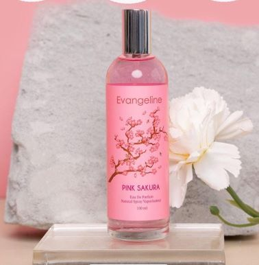
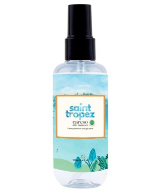
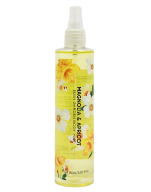
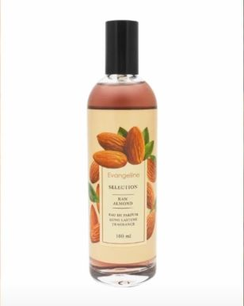

Wangi manis segar memberikan kesan manis, menyegarkan, dan aroma creamy yang dapat meningkatkan suasana hati.

-Evangeline Pink Sakura (100 ml), IDR 28.000-
Read More
Parfum ini memiliki wangi manis berry yang dominan,
sehingga lama-lama wanginya seperti permen.
Top notes: grapefruit, blackcurrant, raspberry
Middle notes: violet, peony, lily
Bottom notes: musk, vanilla, cashmare Wood
Tingkat ketahanan : 3-4 jam

-Caresso Body Mist Saint Tropez (100ml), IDR 34.000-
Read More
Parfum ini akan membuat kamu merasakan kesegaran seperti di,
pinggir pantai dan diseimbangkan dengan wangi manis musk.
Top notes: musk mallow, sea salt
Middle notes: sage, rose
Base notes: ylang-ylang, pink pepper
Tingkat ketahanan : 4-5 jam

-Miniso Body Mist Garden of Eden : Mandarin & Heliotrope Mandarin (150 ml), IDR 29.900-
Read More
Parfum ini memiliki wangi manis buah-buahan, seperti berada di taman buah sehingga body mist ini,
sangat cocok untuk penggemar wangi manis yang menusuk.
Top notes: bergamot, mandarin, mango, pineapple
Middle notes: pina colada, coconut milk, jasmine, orange blossom
Dry down: Gourmand, heliotrop, musk
Tingkat ketahanan : 3-4 jam

-Evangeline Eau De Parfum Raw Almond (100 ml), IDR 28.000-
Read More
PParfum ini membuat pemakainya seperti selalu habis mandi karena,
dominan segar dan diikuti hint manis di belakangnya.
Top notes: butter acord, grapefruit, pear, mandarin
Middle notes: lily, jasmine, peach
Base notes: vanilla, caramel, sandalwood, musks
Tingkat ketahanan : 3-4 jam